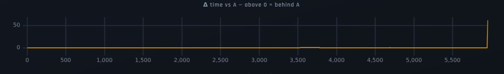
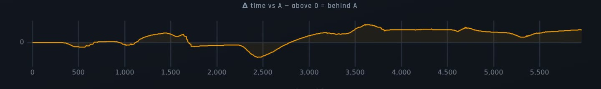

We thought three laps had lost their finish. They hadn’t.
SplitTime records our Forza Horizon 6 driving and compares our laps. We fixed two bugs that made good laps look wrong. Nobody’s time or standing changed.
The stopwatch reset a moment too soon
One chart shows where you gain or lose time against another lap. On 76 of our 121 timed laps, the very last reading had already started counting the next lap, as if the stopwatch snapped back to zero right on the line.
That one reading made the chart useless. These two laps finished about a quarter of a second apart, but the chart claimed a gap of more than 61 seconds at the end, which squashed everything else into a flat line.


Good laps were thrown away as a “rewind”
Three laps looked as if the car had never reached the finish. At first we blamed lost recordings, and that was wrong. Every one was recorded right to the line.
Forza lets you rewind, so SplitTime discards whatever a driver rewinds over. One snapshot from the start of the next attempt had been filed at the end of each of these laps. It looked like a jump back to the start, so SplitTime treated it as a rewind and hid the good data before it.
Think of a misfiled page at the back of a logbook convincing someone that the last chapters had been crossed out. The chapters were always there. We now set that page aside when reading the book.
| What we checked | Before | After |
|---|---|---|
| Share of the route shown on lap 327, 2 min 26 s into the replay | 1% | 88% |
| Where laps 327, 329 and 167 seemed to end, in the game’s distance units (the finish is about 5,950) | 56, 56, 268 | about 5,950 |
| Corners shown on the Temple CC course | 0 | 19 |
- Lap times, standings and weekly recaps
- Written race reports
- The recordings themselves, which were never edited
Three laps have short holes in them, where the game’s data never reached us: about 13 seconds on lap 265 (River Descent), and about 6 seconds each on lap 319 (Daikoku Circuit) and lap 167 (Temple CC). Nothing was saved for those moments, so there’s nothing to restore.
- Pull request #69: the stopwatch fix
- Pull request #70: the rewind fix
- LapScope pull request #110: where the stopwatch fix started